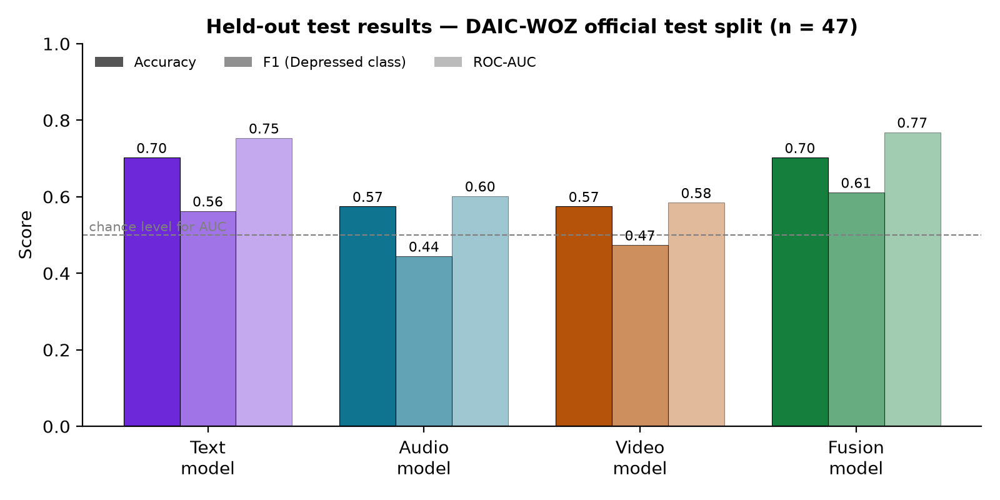
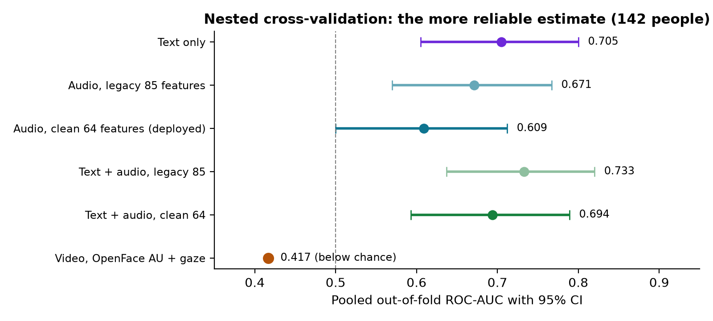
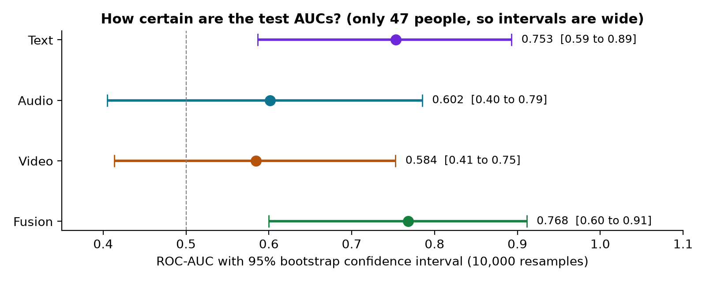
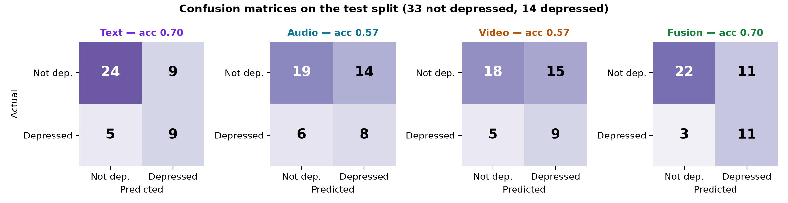
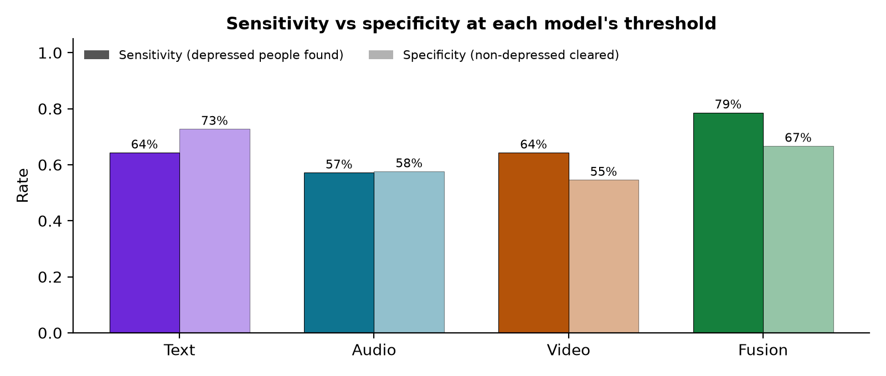
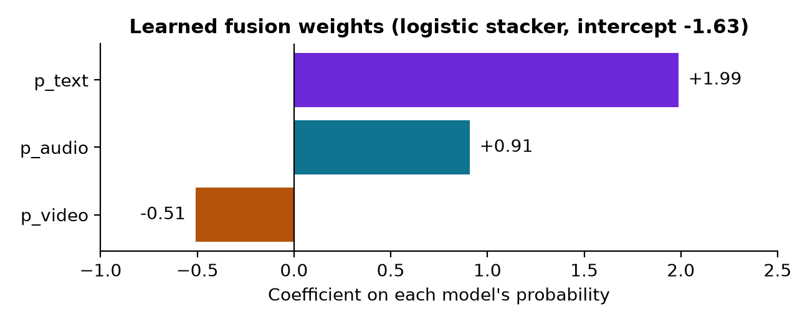
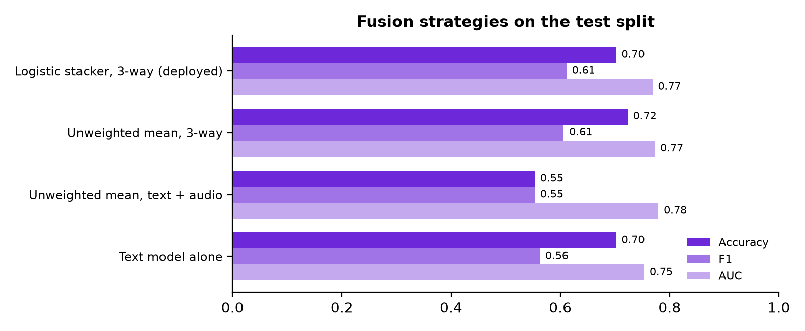

Review preparation guide: model results, algorithms, architecture, implementation status, demo plan and a question bank mapped to every row of the evaluation sheet.
All model numbers come from the project's own training run on the official DAIC-WOZ release
(My_Work/results), and the text and audio results were re-verified on this machine (test AUC 0.7532 and 0.6017 reproduced exactly).
Prepared 11 September 2026.
Problem. Depression is common and under-diagnosed; counsellors see many people and a first screening conversation is subjective. Research (AVEC 2016/2017 challenges on the DAIC-WOZ corpus) shows that what people say, how they say it and how their face moves carry measurable signals associated with depression.
Solution. A web platform where an approved counsellor uploads (or records) a counselling conversation. The system separates the participant's voice from the counsellor's, transcribes it, extracts text, audio and facial features, runs three trained models and a fusion model, and produces a report: Depressed / Not depressed, a confidence score, how much each modality contributed, and an explanation in plain language that a participant can understand. It is a screening aid, not a diagnosis — the counsellor's own judgement is recorded separately on every report.
Users. Admin (approves counsellors, manages models, voice passage, research dataset, privacy/erasure, audit log) and Counsellor (participants, sessions, voice enrolment, reports, judgement, settings).
Dataset: official DAIC-WOZ, 188 participants — train 107, dev 34, test 47 (participant 440 excluded: corrupt in the official release). Label: PHQ-8 score ≥ 10 → Depressed. Test split: 47 people, 14 depressed (29.8%). The test split was scored once, after every choice was made on train/dev.
| Model | Algorithm | Inputs | Accuracy | Precision | Recall (Sensitivity) | Specificity | F1 | ROC-AUC [95% CI] | Threshold |
|---|---|---|---|---|---|---|---|---|---|
| Text | Logistic Regression, SelectKBest k=50, C=0.01 | 3096 | 70.2% | 50.0% | 64.3% | 72.7% | 0.563 | 0.753 [0.59–0.89] | 0.301 |
| Audio | Logistic Regression, SelectKBest k=25, C=1 | 64 | 57.4% | 36.4% | 57.1% | 57.6% | 0.444 | 0.602 [0.40–0.79] | 0.304 |
| Video | Logistic Regression, SelectKBest k=25, C=1 | 224 | 57.4% | 37.5% | 64.3% | 54.5% | 0.474 | 0.584 [0.41–0.75] | 0.286 |
| Fusion | Logistic Regression stacker on [p_text, p_audio, p_video] | 3 | 70.2% | 50.0% | 78.6% | 66.7% | 0.611 | 0.768 [0.60–0.91] | 0.294 |
Confusion counts (TN / FP / FN / TP): text 24/9/5/9 · audio 19/14/6/8 · video 18/15/5/9 · fusion 22/11/3/11. Balanced accuracy: text 68.5%, audio 57.4%, video 59.4%, fusion 72.6%. Thresholds chosen by Youden's J on out-of-fold predictions of train+dev, never on test.

Cross-validation uses 142 people instead of 47, so it is the more reliable estimate of future performance.
| Configuration | Pooled AUC | 95% CI | Accuracy | F1 | Sensitivity | Specificity |
|---|---|---|---|---|---|---|
| Text only | 0.705 | 0.605–0.800 | 66.2% | 0.571 | 76.2% | 62.0% |
| Audio, legacy 85 features (includes interviewer timing) | 0.671 | 0.570–0.767 | 66.2% | 0.520 | 61.9% | 68.0% |
| Audio, clean 64 features (deployed) | 0.609 | 0.500–0.712 | 67.6% | 0.452 | 45.2% | 77.0% |
| Text + audio, legacy 85 | 0.733 | 0.637–0.820 | 73.9% | 0.543 | 52.4% | 83.0% |
| Text + audio, clean 64 | 0.694 | 0.593–0.789 | 76.1% | 0.514 | 42.9% | 90.0% |
| Video, OpenFace action units + gaze | 0.417 | — | below chance in cross-validation; adding it to text+audio cost 0.084 AUC (95% CI −0.138 to −0.031) | |||






| Stage | Technique | Why this choice |
|---|---|---|
| Audio extraction | ffmpeg → 16 kHz mono WAV; any video/audio format accepted (upload up to 520 MB) | All speech models expect 16 kHz mono; one normalised format. |
| Speech recognition | faster-whisper (OpenAI Whisper, CTranslate2), model "small", int8 on CPU, word-level timestamps | Robust to accents and noise; timestamps are needed to align words with speakers. |
| Speaker diarization | pyannote.audio speaker-diarization-community-1 | Splits "who spoke when"; the models must only see the participant. |
| Speaker identification | Counsellor enrols by reading a fixed passage → 256-dimensional voice embedding. Each diarized speaker is matched by cosine similarity (match ≥ 0.55 and a 0.06 margin over the next candidate); companions can also be enrolled. | Decides which voice is the participant; if it cannot decide, the session is refused (SPEAKER_UNVERIFIED) rather than guessing. |
| Text features (3096) | 24 lexical features (pronoun rates "I/me/my", absolutist words, negative/positive words, negations, hedges, past tense, sleep/fatigue words, type-token ratio, answer lengths…) + all-mpnet-base-v2 sentence embeddings (768-d per sentence) pooled as mean, length-weighted mean, max and std = 3072 | Lexical features are interpretable and research-backed; sentence embeddings capture meaning. Max-pooling keeps a single very negative statement from being averaged away. |
| Audio features (64) | librosa: RMS loudness (dB), YIN pitch 65–400 Hz in semitones, jitter and shimmer proxies, voiced ratio, answer durations, words per answer, speaking rate, participant-only timing. Each series summarised by 9 functionals: mean, std, p10, p25, p50, p75, p90, IQR, slope | Flat pitch, low energy and slow speech are documented depression markers. Interviewer-dependent timing (24 features) was removed to avoid learning the interview protocol. |
| Video features (224) | OpenFace 2.2 (CLNF): 14 facial Action Unit intensities, 6 AU presence rates, gaze direction (camera and head frame); per-session mean, std, p10, p50, p90, max and frame-to-frame change; video resampled to 30 fps | Action Units (e.g. AU04 frown, AU12 smile, AU15 lip-corner depressor) and gaze are the research-recommended facial descriptors. |
| Per-modality classifier | scikit-learn Pipeline: SimpleImputer(median) → StandardScaler → SelectKBest(ANOVA F-test) → LogisticRegression (L2) | Only 107 training people: a simple, strongly regularised linear model generalises best and is fully explainable. Feature selection is inside the pipeline, so it never sees validation data. |
| Fusion | Late fusion by stacking: a logistic regression on the three models' out-of-fold probabilities. Weights: text +1.99, audio +0.91, video −0.51, intercept −1.63 | Learns how much to trust each modality. Early fusion (concatenating features) selected 50 text and 0 audio features — it silently discarded audio. |
| Decision threshold | Youden's J (max sensitivity + specificity − 1) on out-of-fold predictions; fusion threshold 0.2945 | Only ~30% are depressed; a 0.5 threshold would miss most of them. |
| Evaluation | Official AVEC-2017 split; test used once; nested repeated stratified cross-validation (5×4); bootstrap 95% CIs (10,000 resamples); paired bootstrap for model comparisons | Small data makes single numbers unstable; intervals show what is actually known. |
| Explainable AI | Exact linear attribution: contribution = coefficient × standardised value; the 3072 sentence-meaning contributions are summed into one item; modality share = |w·p| / Σ|w·p|; a glossary turns each feature into plain words | Counsellors and participants can see why, e.g. "used more negative words for every positive one". |
| Safety guards | Too-short refusal (below 167 words or 42 replies, the training minimum); speaker-unverified refusal; video-unavailable refusal; out-of-distribution warnings (features > 4 SD from training) in the log; participant speech only; gender never used as a feature | A model fed data unlike its training set still returns a confident number; refusing is safer than a silently wrong report. |
| Layer | Technology |
|---|---|
| Frontend | React 19, Vite 8, React Router, role-based layouts, reusable Loading / Empty / Error states, WCAG AA colour contrast, print-friendly report |
| Backend | Spring Boot 3.3.4 (Java 17), Spring Security, JWT (jjwt), BCrypt, JPA/Hibernate, Flyway migrations, REST controllers, global exception handler |
| Database | PostgreSQL 16 in Docker (docker-compose), JSONB columns for feature vectors |
| ML service | Python 3.11, FastAPI, scikit-learn 1.6.1, PyTorch + Transformers (mpnet), faster-whisper, pyannote.audio, librosa, OpenFace 2.2, MediaPipe, ffmpeg |
| Authentication | Username/email + password, Google Sign-In (ID token verified with Google's official library — never auto-creates accounts or bypasses admin approval), email verification, forgot/reset password with expiring tokens, optional reCAPTCHA v3, show/hide password |
| Security | Role-based access (ADMIN / COUNSELOR), admin approval of counsellor applications, rate-limit filter, CORS allow-list, internal ML endpoints protected by a shared token (constant-time comparison), SHA-256 of every model file, audit log |
| Privacy | Consent-gated research dataset (label = counsellor's judgement, never the model's), original recordings purged after features are stored, per-participant data erasure |
/process: full pipeline, returns prediction + explanation + features/enroll-voice: voiceprint from a recording/internal/validate-model, /internal/reload-models: admin model lifecycle (token-protected)Browser ⇄ REST + JWT ⇄ Spring Boot ⇄ JDBC ⇄ PostgreSQL · Spring Boot ⇄ internal REST (shared token) ⇄ FastAPI ML service ⇄ model files + ffmpeg / Whisper / pyannote / OpenFace
The ML ecosystem (PyTorch, Whisper, scikit-learn) is Python; the business application (security, transactions, database) is best served by Spring Boot. Separating them lets the ML service be restarted, scaled or kept off the internet independently, and the Java backend never has to load a Python model.
| Area | Entities |
|---|---|
| Accounts | User, Role, UserStatus, CounselorApplication, VerificationDocument, ProfessionalProfile, PasswordResetToken, EmailVerificationToken |
| Clinical workflow | Participant, Session, SessionStatus, SessionCompanion, SessionFeatures, Prediction, Report, ExplanationFactor, CounselorJudgment |
| Speakers | CounselorVoiceprint, SpeakerAttribution, EnrollmentPassageEntity |
| ML operations | ModelVersion, ModelModality (TEXT, AUDIO, VIDEO, FUSION) |
| Research & governance | DatasetSample, DatasetEligibilityStatus, AuditLog |
| Module | Status | What exists |
|---|---|---|
| Authentication & accounts | Done | Login, JWT, roles, counsellor application with document upload, admin approval, forgot/reset password, email verification, Google Sign-In, CAPTCHA, show/hide password (Google, CAPTCHA and email need their keys configured) |
| Admin console | Done | Dashboard stats, applications review, users, model management (upload/activate/revert for 4 models), editable enrolment passage, dataset export, privacy/erasure, audit log |
| Counsellor workflow | Done | Dashboard, participants (repeat interviews), sessions, new session (upload), voice enrolment (record or upload), settings, profile |
| Media pipeline | Done | ffmpeg, Whisper transcription, pyannote diarization, voiceprint identification of counsellor/companion/participant |
| Feature extraction | Done | Text 3096, audio 64 (and legacy 85), video 224 (OpenFace) and 111 (MediaPipe) — verified against DAIC-WOZ training features |
| Models & fusion | Done | Four DAIC-WOZ models installed and active; name-based validation of uploads; hot reload |
| Report & explainable AI | Done | Depressed / Not depressed, confidence, modality contributions, per-feature explanation, plain-language section, counsellor judgement, print |
| Research dataset & privacy | Done | Consent, counsellor-judgement labels, export, media purge, erasure |
| Robustness to new microphones/cameras | Partial | Out-of-distribution warnings are logged; loudness calibration and showing the warning on the report are planned |
| Automated tests & CI | Partial | Verification scripts, API integration tests and manual testing done; JUnit / pytest / frontend suite and CI planned |
| Deployment | Planned | Runs locally (Docker PostgreSQL + three services); HTTPS hosting planned |
| # | Task | Outcome |
|---|---|---|
| 1 | Configure Google OAuth client, SMTP and reCAPTCHA keys | Google login, verification e-mails and CAPTCHA live |
| 2 | Show out-of-range warnings on the report; loudness normalisation for new microphones | Counsellor sees when a recording is unlike the training data |
| 3 | Re-evaluate video: keep 3-way fusion or switch to text+audio fusion (supported without code change) | Evidence-based final model |
| 4 | Automated tests (JUnit, pytest, Vitest) and GitHub Actions CI | Every commit tested |
| 5 | Deployment with HTTPS; ML service on a private network | Usable by the counsellor |
| 6 | Pilot with counsellor-labelled sessions; retrain using the platform's research dataset | Models adapted to Indian users and recording conditions |
Each metric carries 5 marks (1 Bad … 5 Excellent). Team Work: 6 × 5 = 30, scaled to 20. Individual Work: 4 × 5 = 20, scaled to 10. Total 30 per student.
| Metric | Evidence to show |
|---|---|
| TWE 1System architecture & design | Section 4 diagram; why three services; database entities; session flow; Flyway migrations |
| TWE 2Module development (~80%) | Section 5 status table; live demo of the full workflow; four models active in Admin → Models |
| TWE 3UI/UX & functional features | Consistent violet theme, role-based navigation, loading/empty/error states, accessible contrast, plain-language report, help and crisis pages |
| TWE 4Technology & practices | React/Spring Boot/FastAPI/PostgreSQL; layered backend (controller → service → repository); DTOs; validation; JWT/BCrypt; env-based config with secrets in gitignored .env; documented code |
| TWE 5Integration & version control | REST contracts between the three services; internal token; model manifest; Git history (32 commits) — push to GitHub before the review |
| TWE 6Testing, debugging & demo | Verification that reproduces the published AUCs; API tests of the model rules; end-to-end run; list of real bugs found and fixed (Q-G5); working demo |
| IWE 1Presentation & communication | 60-second pitch (page 2); each member explains their module in 2 minutes |
| IWE 2Technical knowledge | Sections 2–3; question bank sections H–K |
| IWE 3Individual contribution | Each member names the modules they built, a problem they solved, and shows its code or screen |
| IWE 4Viva / panel interaction | Question bank sections L–M; answer honestly, including limitations |
A1. What is your project?
A web platform that screens for signs of depression from a recorded counselling conversation, using text, voice and facial features, three machine-learning models and a fusion model, and explains the result in plain language. It supports the counsellor's judgement; it does not diagnose.
A2. Who are the users?
Admins (approve counsellors, manage models, dataset and privacy) and counsellors (manage participants and sessions, read reports, record their own judgement). Participants do not log in; they are recorded with consent.
A3. Why multimodal?
Depression shows up in what people say (negative, self-focused words), how they speak (flat pitch, low energy) and facial expression (less smiling). Each modality alone is weak; fusion combines them. In our results fusion has the highest AUC (0.768) and recall (78.6%).
A4. What is the output?
Depressed or Not depressed, a probability-based confidence, how much text, audio and video contributed, the strongest factors with their direction, and a plain-language explanation. The counsellor then records their own assessment.
A5. What is novel compared with existing work?
Most DAIC-WOZ work stops at a notebook. We built a deployable, secured platform with real speaker identification, participant-only (leak-free) modelling, exact explanations, model version management with validation, and a consent-based dataset that uses the counsellor's judgement as the label.
B1. Explain your architecture.
Three tiers: React frontend; Spring Boot backend with PostgreSQL for users, sessions and reports; a FastAPI Python ML service for the pipeline and models. The frontend talks only to the backend with JWT; the backend calls the ML service over an internal REST API protected by a shared token.
B2. Why a separate Python service?
The ML libraries are Python, and model loading is heavy. Isolating it keeps the web backend fast and secure, lets the ML service be restarted or scaled independently and kept off the public internet, and lets models be replaced without touching Java code.
B3. Describe the database design.
PostgreSQL with 27 JPA entities managed by 14 Flyway migrations: accounts (users, applications, documents, tokens), clinical workflow (participants, sessions, companions, features, predictions, reports, explanation factors, judgements), speakers (voiceprints, attributions), ML operations (model versions) and governance (dataset samples, audit log). Feature vectors are stored as JSONB.
B4. Why Flyway?
Versioned, repeatable schema changes: every database change is a numbered SQL file (V1…V14) applied automatically at startup, so every machine has the same schema and the history is in Git.
B5. Walk through the flow when a session is uploaded.
See Section 4: store file → PROCESSING → ML service → transcribe, diarize, identify participant → extract features → guards → predict and fuse → explanation → store report → COMPLETED → counsellor judgement → optional dataset and media purge.
B6. How are models versioned and switched?
An admin uploads a .joblib per modality and language. The ML service validates it (loadable, has predict_proba and a threshold, and every input column it names is a feature we measure). Activation writes an active manifest and hot-reloads models; revert returns to the built-in or previous version. Each file's SHA-256 is recorded.
B7. How does the system know which speaker is the participant?
The counsellor enrols their voice by reading a fixed passage; companions can enrol too. Each diarized speaker's embedding is compared by cosine similarity; a match needs ≥ 0.55 and a 0.06 margin over the next candidate. The remaining unmatched speaker is the participant. If it is ambiguous, the session is refused rather than analysing the wrong person.
B8. How does multi-language support work?
Models are installed per language. A language becomes selectable only when its text, audio and fusion models are all active; English models are never silently used for another language. Whisper transcribes in the selected language.
C1. What percentage is complete, and how do you justify it?
Every core workflow works end to end (Section 5) — authentication and approval, enrolment, upload, analysis with four trained models, explained report, judgement, dataset and privacy. Remaining work is configuration of external keys, calibration, automated tests and deployment — about 15–20%.
C2. Which modules are pending?
Loudness calibration and showing out-of-range warnings on the report, an automated test suite with CI, HTTPS deployment, and configuring Google OAuth, SMTP and reCAPTCHA keys (the code for these is complete).
C3. How will you achieve the remaining outcomes?
Follow the plan table in Section 5: keys and warnings first, then the video decision, then tests and CI, then deployment and a pilot with counsellor-labelled sessions.
C4. Were the models trained by you?
Yes, on the official DAIC-WOZ corpus (approved by USC) on the college GPU machine, following a documented workflow: dataset analysis, literature review, feature extraction identical to production, training on train, tuning on dev, testing once. We then verified on our machine that the website reproduces the training features and the reported AUCs exactly.
C5. What happens if a module fails, e.g. the ML service is down?
The session is marked FAILED with a readable message and can be retried; the rest of the application keeps working. Model reload only swaps models after every new model loads successfully, so a bad file never takes inference down.
D1. How did you design the UI?
A consistent violet theme, desktop-first layouts (1366–1920 px), role-based navigation, and reusable components for loading, empty and error states, so every page behaves the same way. Colours were adjusted to meet WCAG AA contrast.
D2. How is the report made understandable?
The result is stated plainly as Depressed / Not depressed. Each factor is translated from a technical name (e.g. lex_neg_pos_ratio) to words ("used more negative words for every positive one"), and an "In plain words" section can be read to the participant, including the error rate and the fact that it is not a diagnosis.
D3. What about users in crisis?
There is a crisis resources page, and the report never tells the participant what to do — that is the counsellor's role.
D4. How does voice enrolment work for the user?
The counsellor can record directly in the browser or upload a file, reading an admin-editable passage (the same passage for counsellors and companions). Any format is normalised to 16 kHz mono with ffmpeg.
D5. How did you handle navigation bugs such as the back button?
Public pages (login, forgot password, request access) are wrapped in a PublicOnlyRoute, and one component (AuthContext) owns the session and reacts to an "unauthorized" event from the API client. This fixed the login page appearing inside the admin layout after pressing Back.
E1. Why React, Spring Boot, PostgreSQL and FastAPI?
React for a component-based UI; Spring Boot for mature security, transactions and a layered architecture; PostgreSQL for relational integrity plus JSONB for feature vectors; FastAPI because the ML stack is Python and it gives typed, validated APIs.
E2. How is authentication implemented?
Passwords hashed with BCrypt; login returns a signed JWT sent as a Bearer token; Spring Security checks it and the role on every request. Google Sign-In verifies Google's ID token with the official library (audience pinned, verified e-mail required) and only logs in accounts that already exist and are approved.
E3. What security measures did you implement?
Role-based access, admin approval, JWT, BCrypt, expiring reset and verification tokens, a rate-limit filter, CORS allow-list, CAPTCHA option, file-type validation, a shared-token and constant-time check on internal ML endpoints, model SHA-256 hashes, an audit log, and secrets kept in gitignored .env files.
E4. Why is uploading a .joblib model dangerous and how do you handle it?
A .joblib is a Python pickle, and loading one can execute arbitrary code. Upload is restricted to admins, the page warns about it, the internal endpoint needs a secret token, every file is hashed, and the ML service should never be reachable from the internet.
E5. What coding standards did you follow?
Layered backend (controller → service → repository), DTOs instead of exposing entities, a global exception handler with consistent error responses, environment-based configuration, meaningful commit messages, and comments that explain why a decision was made.
E6. What libraries does the ML side use?
scikit-learn (models), PyTorch and Transformers (mpnet embeddings), faster-whisper (speech-to-text), pyannote.audio (diarization and voiceprints), librosa (audio features), OpenFace 2.2 (facial action units and gaze), MediaPipe (face geometry), ffmpeg (media conversion).
E7. How do you keep the dataset out of the repository?
.gitignore excludes the DAIC-WOZ data, training artefacts, model files, recordings, test media and all .env files. The corpus licence does not allow redistribution.
F1. How are the modules integrated?
Through REST contracts: frontend ↔ backend (JSON, JWT), backend ↔ ML service (/process, /enroll-voice, internal model endpoints). The ML response shape is fixed, so models can change without changing the backend or frontend.
F2. How do you use Git?
Feature-sized commits with descriptive messages (32 so far), secrets and data excluded by .gitignore. [Before the review: push to a GitHub repository and show the commit history and, if possible, branches or pull requests per member.]
F3. How did the team collaborate?
Modules were split (frontend, backend, ML pipeline, model training, testing/documentation) and integrated through the agreed API contracts. [Each member should describe their own part.]
F4. How do the three services find each other?
Configuration: the backend reads ML_SERVICE_URL and the shared token from its .env; the frontend derives the API address from the browser's own location, so it works on localhost and on the LAN without rebuilding.
F5. What integration problems did you face?
Timeouts (long recordings exceeded the backend's 2-minute HTTP timeout → a separate 60-minute pipeline client), format mismatches (mp4 enrolment → ffmpeg normalisation), embedding size mismatch (32-d mock vs 256-d real voiceprints → dimension guard), and a stale LAN IP in the frontend config (→ URL derived at runtime).
G1. How did you test the system?
(1) Verification that the website's feature extraction reproduces the training features on DAIC-WOZ transcripts, and that the text and audio models reproduce their published test AUCs exactly (0.7532, 0.6017). (2) API integration tests of the model rules (e.g. a 4-input fusion is rejected; a 3-input fusion cannot be activated before a video model). (3) End-to-end pipeline runs on real recordings. (4) Manual testing of every page and role flow.
G2. How do you know the deployed model behaves like the trained one?
We ran the website's own extractors on the DAIC-WOZ transcripts: the 24 lexical features match to 10⁻¹⁵, sentence vectors to 10⁻³ (GPU half precision), timing features to 10⁻¹³, and the per-person text probability matches within 0.0005.
G3. Do you have unit tests?
Not yet as an automated suite — testing so far is scripted verification and integration testing. Adding JUnit, pytest and frontend tests with GitHub Actions is part of the remaining plan.
G4. How is invalid input handled?
Upload type and size validation (up to 520 MB), language availability checks, and pipeline guards that refuse too-short interviews, unidentified speakers or missing faces with a clear message instead of producing a misleading result.
G5. Give examples of bugs you found and fixed.
(a) Every short test recording came out "depressed": the text model saw input far outside its training range and output a constant 0.254, which fused to just above the threshold — fixed with a minimum-length guard based on the training minimum. (b) An explanation said "spoke loudly" when the value was below average, because direction was inferred from the contribution's sign — now read from the measured value. (c) Sessions showed FAILED after 2 minutes — timeout. (d) PROCESSING status was invisible — committed in a separate transaction. (e) Revert always reverted English — language not passed. (f) Disabled buttons had 1.69:1 contrast — restyled to WCAG AA.
G6. What is 80% working functionality in your demo?
A counsellor can enrol, upload a session and receive an explained report produced by the four trained models; the admin can approve users and manage models, dataset and privacy.
G7. What if the demo recording is short?
It is refused as TOO_SHORT by design — the models were trained on interviews of 167–4,611 participant words, and scoring shorter ones produced meaningless results. Use a recording with a few minutes of participant speech.
H1. What is DAIC-WOZ?
The Distress Analysis Interview Corpus – Wizard of Oz, from the University of Southern California. 189 clinical-style interviews conducted by a virtual interviewer ("Ellie", controlled by a human operator), with audio, transcripts, facial features and PHQ-8 questionnaire scores. It was used in the AVEC 2016 and 2017 depression challenges. Access requires an approved request; ours was approved.
H2. What is PHQ-8 and how is the label made?
The 8-item Patient Health Questionnaire, each item 0–3, total 0–24. A score of 10 or more is the standard cut-off for depression, giving the binary label Depressed / Not depressed.
H3. How was the data split?
The official AVEC-2017 split: train 107, dev 34, test 47 participants, with no person in more than one split. Models were fitted on train (and train+dev for the final models), thresholds chosen by cross-validation, and test used once.
H4. Is the dataset balanced? How did you handle imbalance?
No — about 30% depressed (14 of 47 in test). We report AUC, F1, sensitivity and specificity rather than accuracy alone, and choose the decision threshold by Youden's J instead of 0.5, which would miss most depressed people.
H5. Did you find problems in the dataset?
Yes: one participant's files are corrupt in the official download (excluded); one participant's binary label disagrees with their PHQ-8 score; and the training split has an 18-point gap in depression rate between genders that does not exist in dev/test — so gender is never used as a feature.
H6. Why not use the interviewer's questions?
Burdisso et al. (2024) showed that a model reading only the interviewer's prompts reaches about 0.83 AUC on DAIC-WOZ, because the interview branches on the answers. That is leakage, and it disappears in real use. We use only the participant's speech, and removed 24 audio features that depended on the interviewer's timing.
I1. Which algorithm does each model use?
Text, audio and video each use a scikit-learn pipeline: median imputation → standard scaling → SelectKBest (ANOVA F-test) → L2-regularised logistic regression. Fusion is a logistic regression stacked on the three probabilities.
I2. Why logistic regression and not deep learning?
Only 107–142 people for training: deep models overfit. The research log records six deep and attention architectures (BiLSTM, transformer, cross-attention, gated and bilinear fusion) at utterance level; all lost to simple models. Logistic regression is also exactly explainable.
I3. What is SelectKBest and why use it?
It keeps the k features with the highest ANOVA F-score against the label (text 50 of 3096, audio 25 of 64, video 25 of 224). With far more features than people, selection is essential. It runs inside the pipeline, so it is refitted in every fold and never sees validation data.
I4. What does C = 0.01 mean for the text model?
C is the inverse of regularisation strength; 0.01 means strong L2 regularisation, shrinking weights to prevent memorising 107 people.
I5. What are the 24 lexical features?
Word count, number of answers, words per answer (mean, std, median), type-token ratio, root TTR, mean word length, rates of first-person singular, first-person plural, second person, third person, absolutist, negative, positive, negation, hedge, past-tense and sleep/fatigue words, self-focus ratio, negative/positive ratio, sentiment balance, short- and long-answer rates.
I6. What is all-mpnet-base-v2 and why pool four ways?
A sentence-transformer that maps each sentence to a 768-dimensional meaning vector. Pooling over all answers with mean (overall tone), length-weighted mean (longer answers count more), max (the most extreme statement) and std (variability) gives 3072 features.
I7. What are the audio features?
Answer duration and words per answer, total speech time, speaking rate, loudness (RMS in dB), voiced ratio, pitch (YIN, in semitones), pitch range, jitter (pitch wobble) and shimmer (loudness wobble) proxies, and participant-only timing — each summarised with mean, std, percentiles, IQR and slope: 64 features.
I8. What are Action Units?
The Facial Action Coding System describes facial muscle movements, e.g. AU04 brow lowerer (frown), AU12 lip-corner puller (smile), AU15 lip-corner depressor, AU17 chin raiser, AU45 blink. OpenFace estimates their intensity and presence per frame; we summarise 14 intensities, 6 presence rates and gaze direction into 224 features.
I9. What is fusion and which type did you use?
Combining modalities. Early fusion concatenates features; late fusion combines each model's output. We use late fusion by stacking: a logistic regression trained on out-of-fold probabilities, so it learns how much to trust each modality (text +1.99, audio +0.91, video −0.51).
I10. Why train the stacker on out-of-fold probabilities?
If it were trained on predictions for people the base models had already seen, those predictions would be over-confident and the stacker would learn the wrong weights. Out-of-fold predictions imitate unseen data.
I11. Why is the threshold 0.29 and not 0.5?
It was chosen by Youden's J on out-of-fold predictions to balance sensitivity and specificity. With 30% prevalence, probabilities are generally low, and 0.5 would miss most depressed people.
I12. What is diarization, and what is Whisper?
Diarization answers "who spoke when" by clustering voice segments into speakers (pyannote). Whisper is an automatic speech-recognition model; faster-whisper is an optimised implementation that we run on CPU with int8 quantisation and word timestamps.
I13. Why is video's fusion weight negative?
Video was below chance in cross-validation (AUC 0.42), so when text and audio are known, a higher video probability is slightly associated with not depressed in the training data. The stacker learned that by itself. It shows video does not help on this dataset.
I14. How do you prevent overfitting?
Strong regularisation, feature selection inside the pipeline, simple models, nested cross-validation, thresholds from out-of-fold data, a test set used once, and reporting confidence intervals.
J1. What is the accuracy of each model?
On the held-out test set (47 people): text 70.2%, audio 57.4%, video 57.4%, fusion 70.2%. AUC: 0.753, 0.602, 0.584 and 0.768. Fusion has the best recall: 78.6% (11 of 14 depressed people found). See Table 1.
J2. Fusion and text have the same accuracy — so why fuse?
Accuracy hides the trade-off. Fusion finds 11 depressed people instead of 9, has higher F1 (0.61 vs 0.56) and AUC (0.768 vs 0.753). For screening, missing a depressed person is worse than a false alarm the counsellor will review.
J3. What is ROC-AUC and why report it?
The probability that the model ranks a random depressed person above a random non-depressed one (0.5 = chance, 1 = perfect). It does not depend on the threshold or class imbalance, so it is the fairest single comparison.
J4. Explain precision, recall and F1 for your fusion model.
Precision 50%: of 22 people flagged, 11 were depressed. Recall 78.6%: of 14 depressed people, 11 were flagged. F1 0.611 is their harmonic mean.
J5. What do the confidence intervals tell you?
With 47 test people, the fusion AUC could reasonably be anywhere from 0.60 to 0.91. So small differences between models are not statistically meaningful — we say that openly and rely on cross-validation as well.
J6. How does your result compare with published work?
Many papers report 0.85–0.95 on DAIC-WOZ, but several used interviewer turns or tuned on test data. The official AVEC challenge baselines were modest. Our 0.70–0.77 AUC with participant-only data and a single test pass is in the honest range.
J7. Which modality is most useful and why?
Text: word habits and meaning (e.g. more negative words relative to positive ones) are the strongest markers in these interviews. Its fusion weight is the largest (+1.99).
J8. Why did audio get worse after your change?
The old audio features included response latency after the interviewer's questions; the interviewer was a scripted virtual agent, so those features partly measured the protocol. Removing them lowered CV AUC from 0.671 to 0.609, but the remaining model measures only the participant, which is what will exist in real counselling.
K1. How is the prediction explained?
Each model is linear, so each selected feature's exact contribution to the log-odds is coefficient × standardised value. We show the strongest factors, whether each was above or below average, and whether it pushed toward or away from depressed, plus each modality's share.
K2. How do you explain 3072 embedding numbers?
Individually they mean nothing, so their contributions are summed into one item: "taken as a whole, what was said was closer in meaning to what depressed participants said". For a linear model this sum is exact.
K3. Why not SHAP or LIME?
For a linear model with standardised inputs, the coefficient × value attribution is exactly the SHAP value relative to the training mean, and it is computed without sampling or approximation.
K4. How does a participant understand it?
A glossary turns every feature into plain words, and the "In plain words" section says what the computer looked at, what it noticed, that patterns are not a diagnosis, ordinary reasons for them, and that it is wrong about 3 times in 10.
L1. Is this a diagnostic tool?
No. It is a screening aid. The report says so, and the counsellor's own judgement is recorded separately and is what counts.
L2. How is consent and privacy handled?
Sessions join the research dataset only with consent. The label stored is the counsellor's judgement, never the model's prediction. Original recordings are purged after features are stored, participants' data can be erased, and all admin actions are audited.
L3. What about bias?
The training data is 188 US adults interviewed by a virtual agent. We found a gender shortcut in the training split and excluded gender. Accents, languages, age groups and recording setups are untested — the platform logs when a recording is far outside the training data, and the plan includes retraining on the platform's own counsellor-labelled data.
L4. What if the model is wrong?
It is wrong about 3 in 10 times. False negatives are the risk, so fusion is tuned toward recall (78.6%). Every result is reviewed by a counsellor, and crisis resources are available in the app.
L5. Where is data stored, and how is it protected?
In PostgreSQL and server-side file storage; passwords are BCrypt-hashed; access requires JWT and the right role; recordings are deleted after processing; secrets are in environment files, not in code.
L6. Why refuse sessions instead of always giving a result?
Because a model given data unlike its training data still produces a confident-looking number. We saw exactly this: every short recording came out "depressed". A refusal with a reason is safer than a wrong report about someone's mental health.
M1. 70% accuracy is low. Why should anyone use this?
It is a screening aid that flags 11 of 14 depressed people for a counsellor to review, not a replacement for one. On this dataset, honestly evaluated, 70–77% is the realistic level; higher published numbers mostly come from leakage.
M2. If video hurts, why is it in your final model?
The project scope is multimodal, and the stacker gives video a small negative weight, so its effect is limited. The platform can switch to a text+audio fusion without code changes; choosing between them on a larger evaluation is part of our plan.
M3. A happy person was predicted depressed in your testing. Explain.
Those recordings were about a minute long — far shorter than any training interview — so the text model returned a constant just above the threshold. We traced it and added the too-short guard. We also found that different microphones change loudness features; out-of-range warnings are logged, and calibration is planned.
M4. Will it work for Indian accents or Marathi?
Not validated yet. Whisper handles many accents and languages, but the depression models were trained on US English. Other languages stay disabled until their own models are installed — the platform never substitutes English models. Retraining on local, counsellor-labelled data is the path.
M5. Can someone fake the result?
Yes, a person who acts differently can change the features — like any interview-based screening. It is meant for cooperative counselling sessions, and the counsellor's judgement is final.
M6. Did you just use someone else's model?
No. The models were trained on the official corpus with our documented workflow, and we verified on our own machine that the deployed feature extraction reproduces the training features and published AUCs exactly. The web platform, pipeline, identification, explanation and model management are our implementation.
M7. Why is the test set so small, and does that matter?
It is the official DAIC-WOZ test split (47 people). It matters: one person changes accuracy by 2.1 points, which is why we report confidence intervals and cross-validation on 142 people.
M8. What would you do with more time?
Collect consented, counsellor-labelled sessions from the platform and retrain for local languages and recording conditions; calibrate audio and video for new devices; add automated tests and CI; deploy securely; and study whether video helps on the new data.
N1. What was your individual contribution?
Prepare your own answer: name your modules (e.g. frontend pages, backend services, ML pipeline, model training, testing/documentation), one technical problem you solved, and be ready to open that code or screen.
N2. Explain the part of the code you wrote.
Pick one file you know well and explain its input, output and one design decision, e.g. real_inference.py (the orchestrator), feature_space.py (name-based model inputs), SessionProcessingService.java (status handling) or AdminModels.jsx (model management screen).
N3. Presentation tips
Start with the 60-second pitch, show the demo before the theory, point at Figure 1 when asked about accuracy, say "we measured" rather than "it works", and when you do not know, say what you would check.
| ✓ | Item |
|---|---|
| ☐ | Create a GitHub repository and push (the sheet marks Git/GitHub usage). Confirm Dataset/, My_Work/, Friends_Work/, Test/ and every .env are not in it. |
| ☐ | All members present; each has rehearsed their 2-minute module explanation (IWE 3). |
| ☐ | Docker Desktop running; start PostgreSQL, ML service, backend and frontend 20 minutes early. |
| ☐ | Demo recording ready with at least ~3 minutes of participant speech and the face in view; counsellor voice already enrolled. |
| ☐ | A completed report open in a tab as a backup in case processing is slow. |
| ☐ | Admin → Models shows all four DAIC-WOZ models as serving. |
| ☐ | This guide, Figure 1 and Table 1 printed or open. |
| ☐ | Coordinate with your guide and panel members in advance about the time slot. |
| Term | Meaning |
|---|---|
| Accuracy | Share of all people classified correctly. |
| Precision | Of those flagged depressed, the share who really are. |
| Recall / sensitivity | Of the depressed people, the share the model flags. |
| Specificity | Of the non-depressed people, the share correctly cleared. |
| F1 | Harmonic mean of precision and recall for the depressed class. |
| ROC-AUC | Chance a random depressed person is scored above a random non-depressed one; 0.5 = guessing. |
| Youden's J | Sensitivity + specificity − 1; the threshold that maximises it is used. |
| Cross-validation | Repeatedly training on part of the data and testing on the rest; nested CV also tunes inside each fold. |
| Bootstrap CI | Resampling the test people 10,000 times to see how much a metric could vary. |
| Stacking | A model trained on other models' outputs (our fusion). |
| Diarization | Splitting audio into "who spoke when". |
| Embedding | A vector of numbers representing meaning (sentences) or identity (voices). |
| Action Unit (AU) | A single facial muscle movement from the Facial Action Coding System. |
| PHQ-8 | Eight-question depression questionnaire; ≥ 10 means depressed. |
| Leakage | Information in training data that will not exist in real use, inflating results (e.g. the interviewer's questions). |
| Out-of-distribution | Input unlike anything in the training data; predictions become unreliable. |
Sources: My_Work/README.md, results/test_results.csv, results/crossvalidation_results.csv, results/FULL_RESEARCH_LOG.md; project repository (README, source code); verification runs on 11 September 2026.